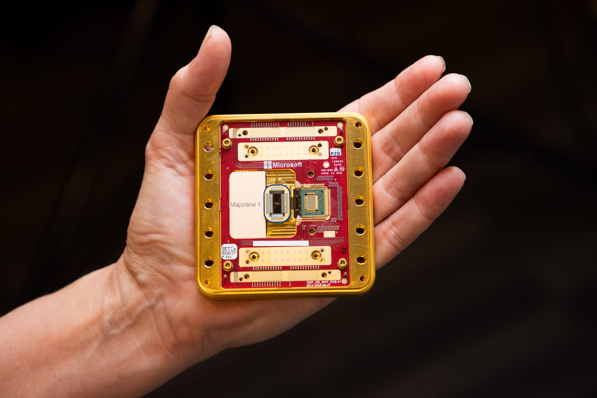

Veille technologique
Qu'est-ce que la veille technologique ?
La veille technologique, qui fait partie intégrante de la veille stratégique, consiste à observer en continu les avancées techniques et les innovations dans un secteur d'activité donné. Elle englobe des actions telles que la surveillance, la collecte, le partage et la diffusion d'informations utiles pour anticiper ou comprendre les évolutions dans des domaines comme la recherche, le développement, les brevets, les nouveaux produits, matériaux, procédés, concepts ou encore les méthodes de fabrication innovantes.
Les types de veille
Veille passive
Elle consiste à recevoir des informations via des sources automatisées : newsletters, flux RSS, réseaux sociaux, alertes Google, forums spécialisés, etc.
L'utilisateur consulte les nouveautés régulièrement mais n'effectue pas lui-même de recherches approfondies.
Avantage : gain de temps et simplicité.
Veille active
L'utilisateur effectue une recherche volontaire, ciblée et approfondie sur un sujet précis (ex. : cybersécurité, nouvelles puces, IA...).
Elle mobilise des outils de recherche avancée, des bases de données spécialisées, des rapports techniques ou des articles scientifiques.
Avantage : informations plus précises, adaptées aux besoins spécifiques du veilleur.
Introduction à l'informatique quantique
Qu'est-ce qu'un ordinateur quantique ?
Un ordinateur quantique est une machine qui utilise des qubits, capables de représenter 0 et 1 en même temps grâce à la mécanique quantique. Cela lui permet de traiter d’énormes volumes de calculs en parallèle, contrairement à l’ordinateur classique qui traite les informations de façon séquentielle, un bit à la fois, ce qui le rend beaucoup plus lent pour certains types de calculs complexes.
Presentation Majorana 1
Majorana 1 est une puce quantique expérimentale conçue par Microsoft. Elle repose sur une approche innovante : l'utilisation de qubits topologiques, des unités d'information quantique basées sur les quasi-particules de Majorana. Contrairement aux qubits traditionnels, ces qubits sont plus stables et moins sensibles aux erreurs liées à l'environnement.
Objectifs et avantages
Les objectifs principaux de Majorana 1 sont :
- • Réduire les erreurs courantes dans les systèmes quantiques classiques
- • Rendre l'informatique quantique plus fiable et évolutive
- • La cybersécurité
- • La simulation moléculaire pour la recherche médicale ou chimique
- • L'optimisation de réseaux ou de logistique
Cette technologie a un fort potentiel dans des domaines comme:
Caractéristiques principales de la puce Majorana 1
- • Type de qubit : Qubits topologiques (plus stables, moins d'erreurs)
- • Nombre de qubits : 8 (projet de monter à 1 million)
- • Technologie : Basée sur des particules appelées quasi-particules de Majorana
- • Matériaux : Alliage de semi-conducteurs et supraconducteurs
- • Température de fonctionnement : proche du zéro absolu (≈ -273 °C)
- • Statut : Prototype avancé, non encore commercialisé
Puce Majorana 1
Sources
- • Site officiel Microsoft Azure Quantum
- • Blog Microsoft Research
- • Article ZDNet – "Microsoft crée un nouveau type de qubit quantique"
- • Numérama – "Microsoft annonce une avancée dans l'informatique quantique"
- • Google Alertes et veille RSS (termes suivis : "qubit topologique", "Microsoft Majorana 1", "ordinateur quantique")